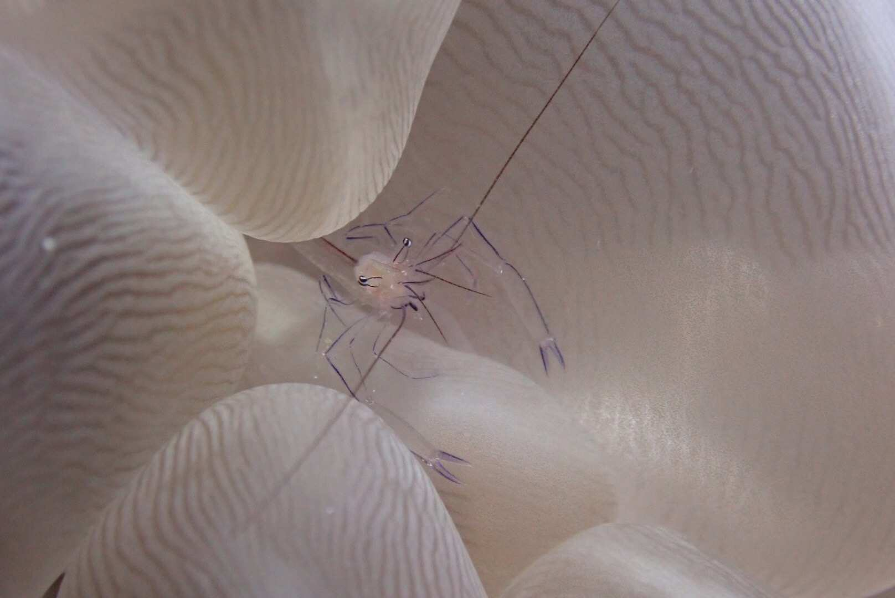
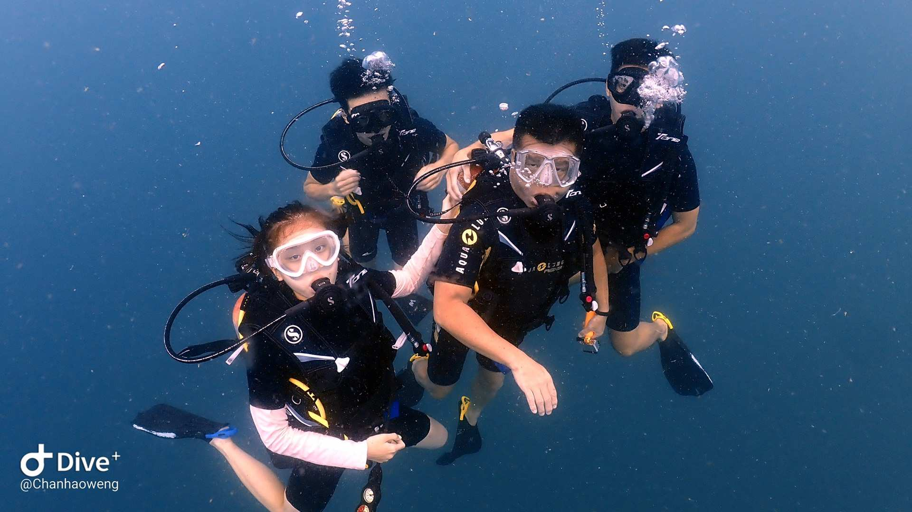
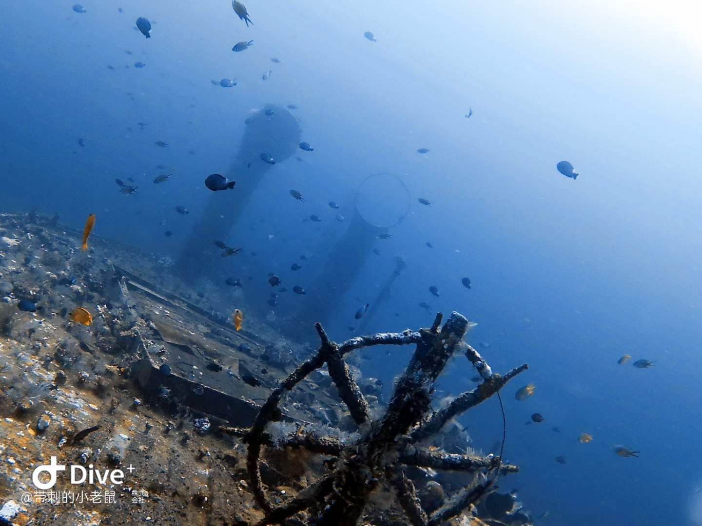
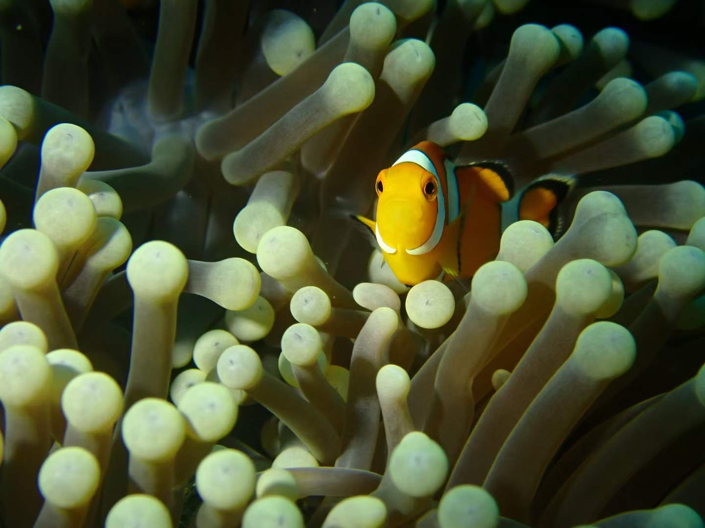

Crab (in Malaysia) In December 2018, I went to Semporna, Malaysia with two of my friends. We spent there 10 days and got the OW certificate. Semporna (Malay: Semporna) is a small town in the Tohu province of Sabah, Malaysia, which means "perfect" in Malay.Surrounded by the sea, Semporna and its affiliated islands are like an island of dreams in the real world. It is a great diving destination and there are many excellent diving bases around to learn a variety of diving courses.

Aplisya (in Malaysia) In December 2018, I went to Semporna, Malaysia with two of my friends. We spent there 10 days and got the OW certificate. Semporna (Malay: Semporna) is a small town in the Tohu province of Sabah, Malaysia, which means "perfect" in Malay.Surrounded by the sea, Semporna and its affiliated islands are like an island of dreams in the real world. It is a great diving destination and there are many excellent diving bases around to learn a variety of diving courses.
- 
Anemone Shrimp (in Malaysia) In December 2018, I went to Semporna, Malaysia with two of my friends. We spent there 10 days and got the OW certificate. Semporna (Malay: Semporna) is a small town in the Tohu province of Sabah, Malaysia, which means "perfect" in Malay.Surrounded by the sea, Semporna and its affiliated islands are like an island of dreams in the real world. It is a great diving destination and there are many excellent diving bases around to learn a variety of diving courses.
- 
Get the AOW certificate in Thailand In Auguast 2019, I went to Bali, Thailand to get my AOW certificate, I dive there for 3 days with two learner from Macao. The cave diving and wreck diving is pretty interesting, but the water quality and visibility are not that good.

Cave Diving in Thailand In Auguast 2019, I went to Bali, Thailand to get my AOW certificate, I dive there for 3 days with two learner from Macao. The cave diving and wreck diving is pretty interesting, but the water quality and visibility are not that good.
- 
Wreck of Liberty 1 In July 2023, after 3 years pandamic, i finally have a chance to dive aboard. I went to Indonesia with one of my college classmate and had 4 days fun dive there. We visited Coral Garden, submarine scarp and also the famous Wreck of Liberty.

Wreck of Liberty 2 In July 2023, after 3 years pandamic, i finally have a chance to dive aboard. I went to Indonesia with one of my college classmate and had 4 days fun dive there. We visited Coral Garden, submarine scarp and also the famous Wreck of Liberty.
- 
Clownfish in Indonesia In July 2023, after 3 years pandamic, i finally have a chance to dive aboard. I went to Indonesia with one of my college classmate and had 4 days fun dive there. We visited Coral Garden, submarine scarp and also the famous Wreck of Liberty.
{kind=link}
{kind=link}
{kind=link}
{kind=link}